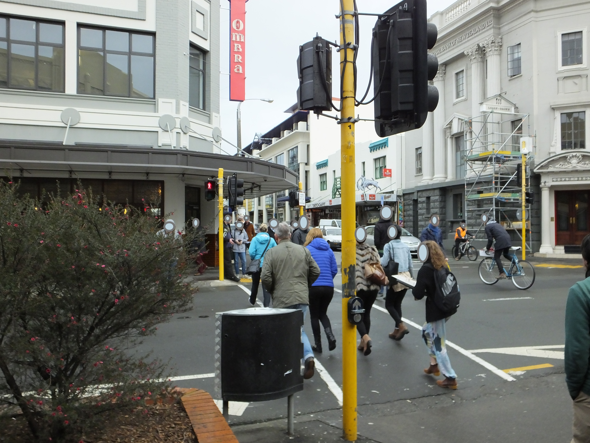
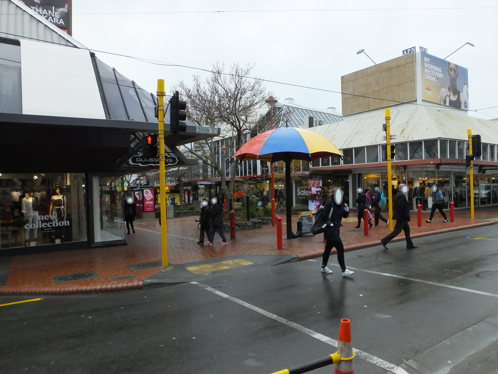
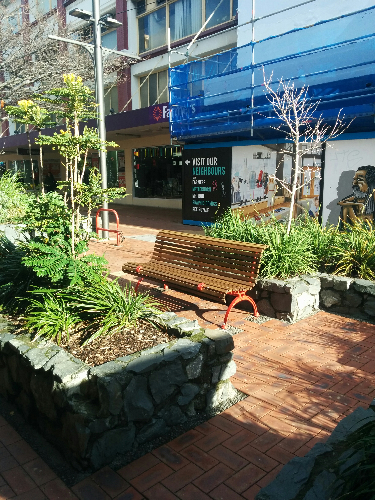
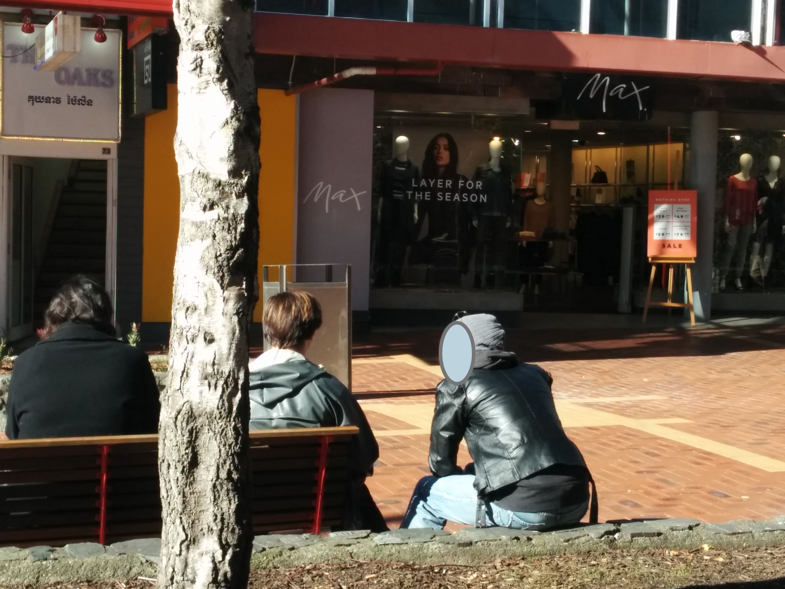
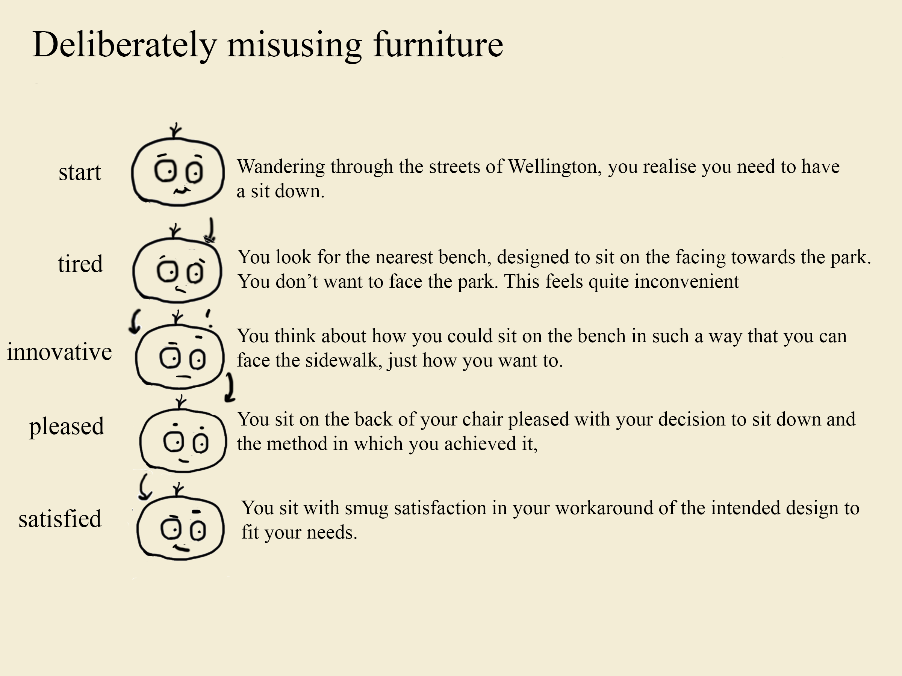
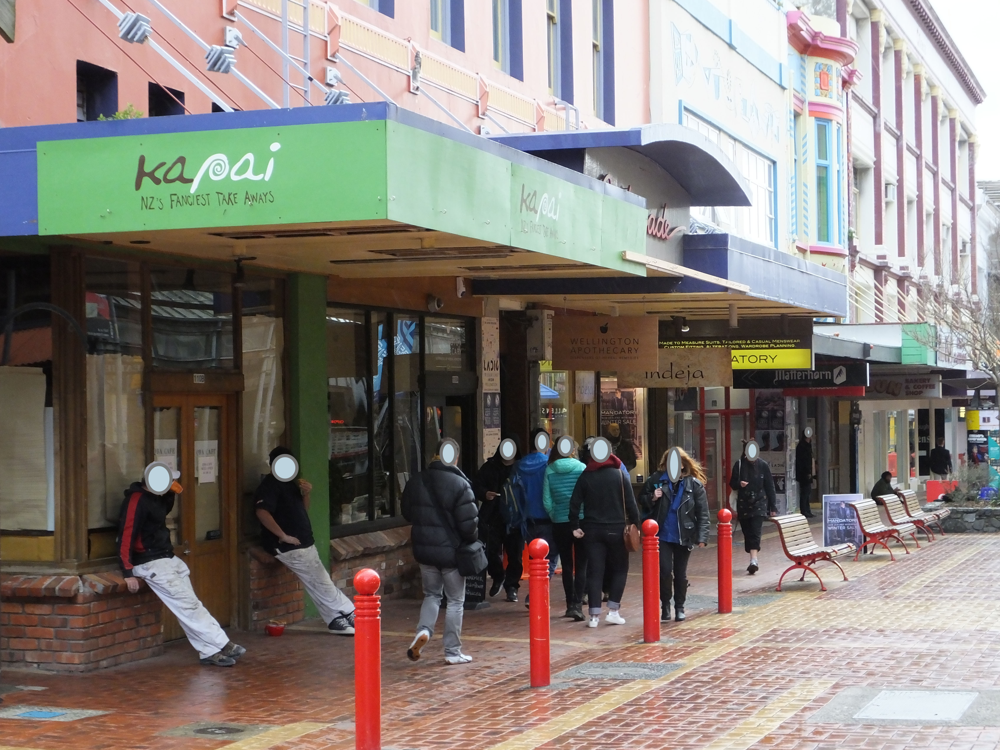
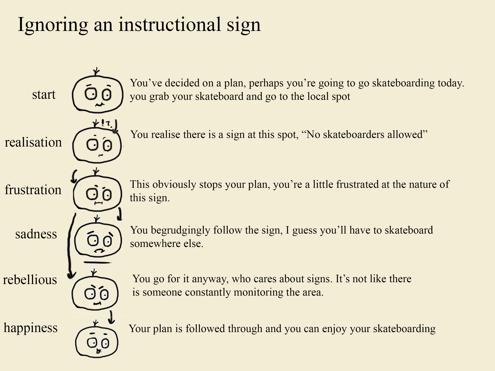
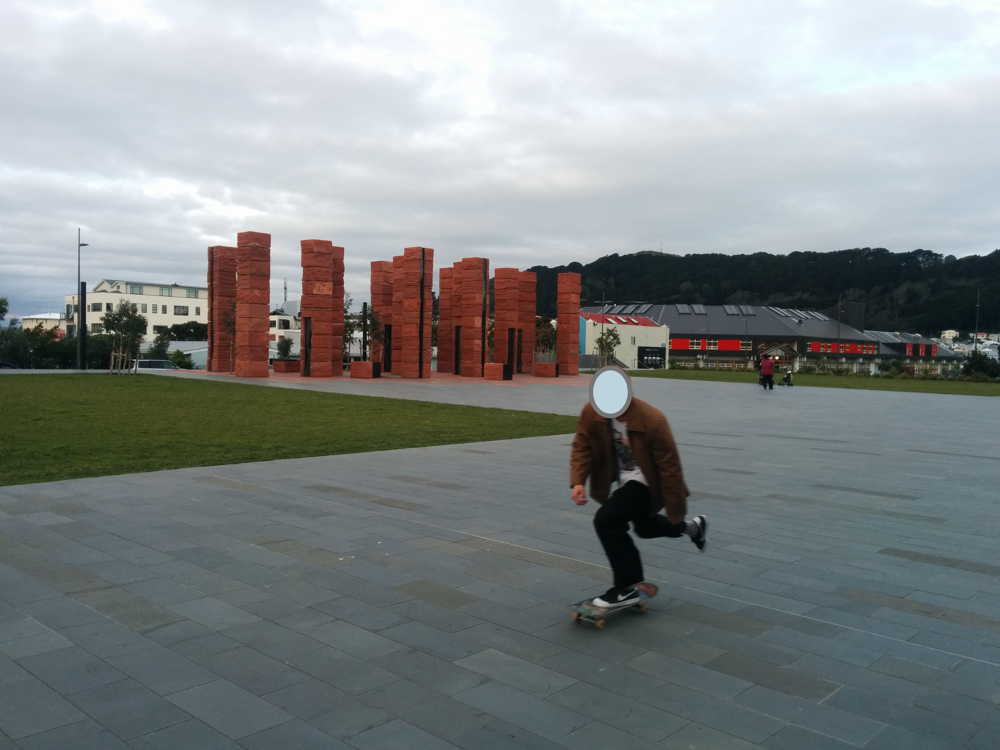
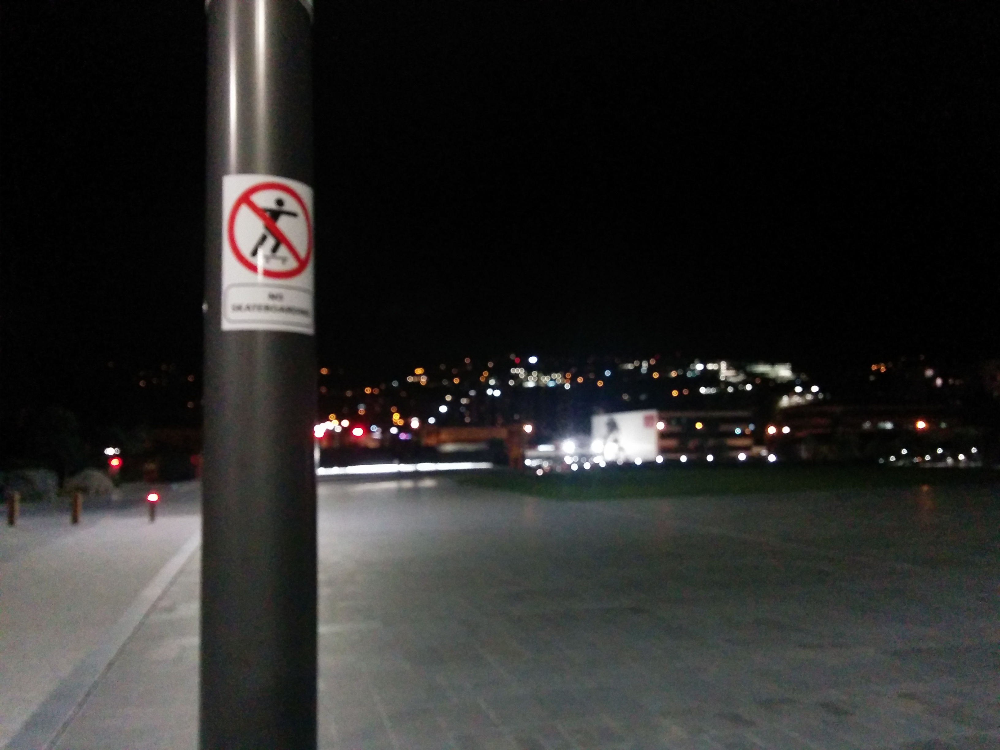

Traffic Lights
An incredibly frustrating thing to deal with when living in Wellington city is the constant encounters with traffic lights. A shared attribute of people who live in cities is that they are most probably a jaywalker. The design of traffic lights obviously necessitates that safety comes first, which as a result means your personal convenience in interacting with them comes second. Poorly timed lights at a quiet hour of the day can be very frustrating if you attempt to be the most law abiding citizen as the quieter the road, the longer you seem to have to wait.
Safety is at the forefront of this interaction, as it is more important to decrease traffic accidents than it is to have people get to work faster. However, the solution that has been chosen for this interaction is not all purpose. As you cannot accurately predict how busy a road is at any given time, a universal timer is set for the lights. This creates the frustrating scenario we all know so well as when you go to cross an empty road, but feel the need to wait for the green man. I decided to program an interactive journey map that I feel really conveys the experience of following this interaction through.
The public ignoring traffic laws
 Quotes from pedestrians
"I tend to ignore the lights, and if I fail to spot a car that's on me"
"I obviously get that it's safety first, but it's always tedious"
Seats
A common sight in just about any populated public area is the standard "park bench". The park bench is presumably designed for convenience. If you for any reason need to take a break and sit down somewhere, the park bench is there for you.
However, the vast majority of public benches look exactly the same. This may not seem important but it makes the whole interaction with a park bench incredibly impersonal. Some might say this doesn't matter and that an interaction with a park bench is never going to be personal anyway. But looking around Wellington city disproves this idea, the fact that you would have to sit like anyone else often seems unpalatable to the average person and so they elect to sit down in their own personal way. For example, people may lean on the back of the bench or sit with their legs off the side of the bench as a whole.
The interaction itself is as simple as 'a deliberate misuse of furniture', and can be found for a variety of reasons. Whether it's simply to avoid the rain or because their are people already sitting on a bench, people might avoid the usual interaction of sitting on a seat due to it's regular design. Below are a few photos of people avoiding a normal interaction with a bench due to their own reasons, aswell as a journey map for 'Rebelious sitting'
  You clicked
Keep off the grass
A very common instructional sign people encounter is the classic 'Keep off the grass sign'. This sign is one that seems to be often ignored, but I wanted to collect peoples opinions on their interactions with it. So I proposed to several people a scenario to see how they thought they would interact. The scenario is as follows
Your daily commute takes you approximately 25 minutes to walk, and your path takes you across a field of well kept grass. Going around the path takes an additional 10 minutes, but after 6 months of taking the quicker route a sign is now on the field that says 'Keep off the grass'. Would you follow the instruction or add 10 minutes to your commute every day?
The responses I got to this scenario tended to lean towards ignoring the sign. Not out of any malicious act, but simply because it's inconvenient to them to follow the sign and generally there is no personal consequence to ignore it. Below are some quotes I got from people I pitched the scenario to
"I don't ignore signs out of spite, but if it ends up being too inconvenient to follow the sign, I just ignore it"
"If it was cordoned off rather than just a small sign, i'd feel it's got a stronger reason to not be walked on"
"Ignoring signs isn't an act of rebellion, it's generally just more convenient"
You typed
A journey map of this interaction
So you didn't click
The interaction here is quite difficult to capture, it entails ignoring signage and therefore it is harder to catch people doing as they don't want to be caught. However, among Wellington city there is a large amount of signage and not all of it is convenient to follow. In terms of convenience in interaction, an instructional sign is generally a decidedly inconvenient thing to interact with.
An instructional sign is an interaction that provides two outcomes, you either change your plan to follow the sign, or you ignore the sign and continue as normal. Your decision on which outcome is determined by the sign posted and the consequence for disobeying the sign. From this it becomes very interesting to see the outcomes created due to the signposter and the user having different goals from the interaction.
and you didn't type


City life Interactions
Every day is made up of thousands of interactions of varying scales. Some interactions are as small as deciding to get out of bed in the morning, while others can be more alike to the challenge of conversation in a job interview. Either way, the sheer number of interactions that people experience in their daily life means that the majority of them are unthought of. This site exists to provide an insight into a few of the interactions that people experience on a daily basis when they live and work in a city (using Wellington as an example).
After an initial walk through the heart of Wellington city, I found that most of the interactions I observed were built for user convenience. Park benches to help you rest after walking all day, trash cans so you don't have to walk too far to throw something out, window shop dressing to let shoppers know if they want to go in the store without actually having to enter. All of these are elements of unique interactions and their intentions are all clear, to make life easier for the person interacting with them.
However, not all interactions can be designed with user convenience at the forefront, and alongside this not all interactions are designed wanting the interaction to be convenient at all. I therefore switched my focus to these interactions. The interactions that have to consider something other than your convenience for a change seems fascinating in a modern city life where everyone is too busy to be inconvenienced. So with this site I present three particular interactions that involved Seats, Signs and Lights